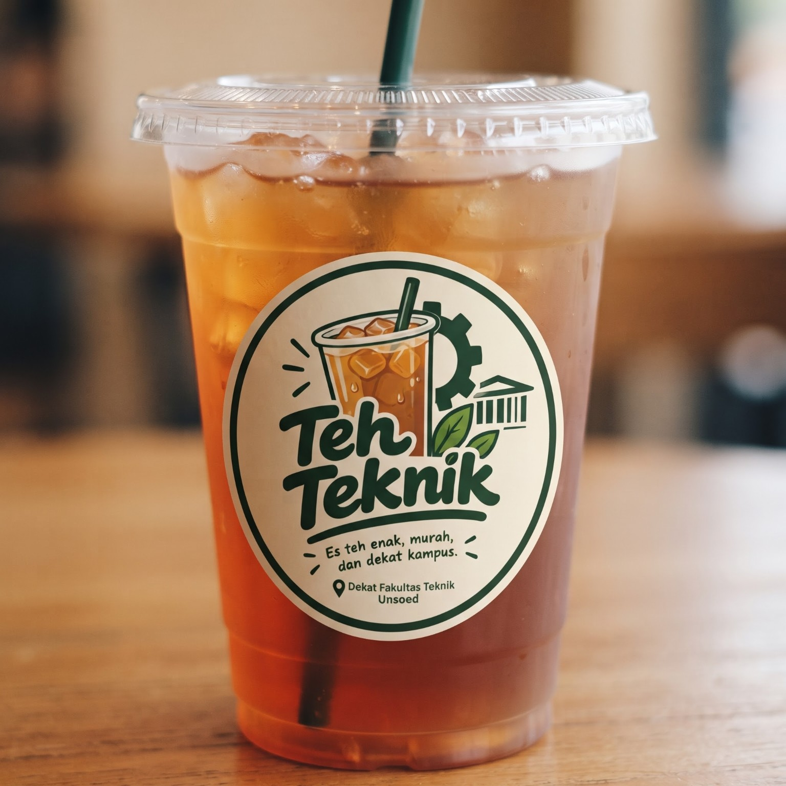
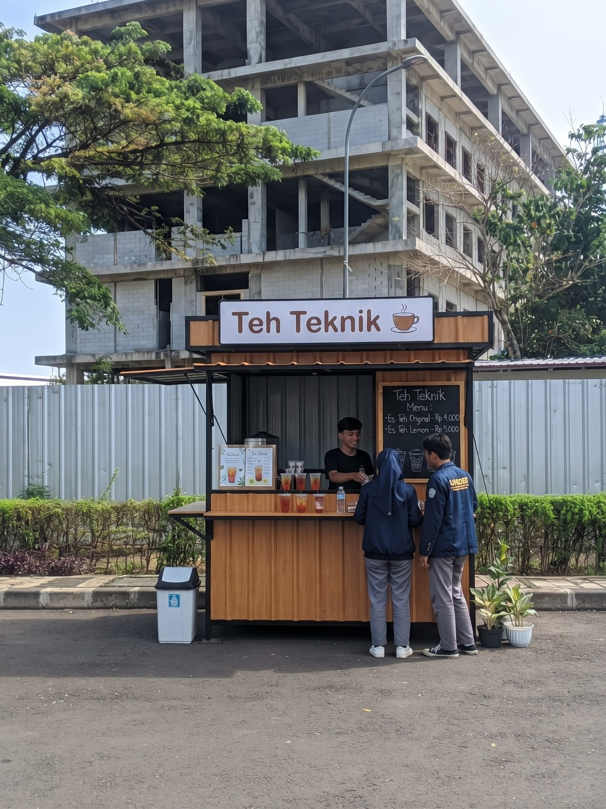

Best seller
Es Teh Original
Rasa teh klasik yang menyegarkan, pas dinikmati kapan saja.
HargaRp 4.000
Teh Teknik — es teh enak, murah, dan dekat kampus. Teman segar buat jeda kelas, nugas, atau ngobrol bareng teman.
Dekat Fakultas Teknik Unsoed
Sederhana, segar, bersahabat. Pilihan pas untuk hari-hari di kampus.

Favorit anak kampus
Mulai Rp4.000
Segar setiap seruput
Pas buat jeda aktivitas
Ramah kantong
Harga mulai Rp4.000
Dekat area kampus
Mampir di sekitar FT Unsoed

Tempat singgah
Dekat Fakultas Teknik
Kuliah, praktikum, rapat, sampai deadline—hari mahasiswa selalu punya cerita. Teh Teknik hadir sebagai pilihan minuman yang menyegarkan, ekonomis, dan praktis di sekitar Fakultas Teknik Unsoed.
Dengan menu yang sederhana dan harga yang bersahabat, kami ingin jadi tempat mampir favorit untuk mengisi ulang semangat sebelum lanjut beraktivitas.
Segar & simpel
Teman istirahat di sela jadwal.
Dekat mahasiswa
Tumbuh bersama semangat kampus.
Kalau sedang berada di area kampus, sempatkan mampir untuk menikmati segelas kesegaran.
Purwokerto, Jawa Tengah
Lokasi booth dapat mengikuti operasional di area kampus.
Kami senang mendengar saran, ulasan, atau ide menu dari kamu. Isi formulir di samping untuk menyiapkan pesan.
Informasi operasional
Untuk informasi jam buka atau ketersediaan menu, silakan kunjungi booth Teh Teknik di area Fakultas Teknik Unsoed.
Email layanan belum dicantumkan karena alamat resmi belum tersedia.